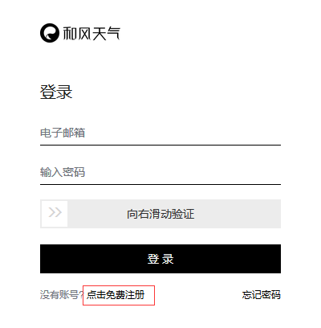
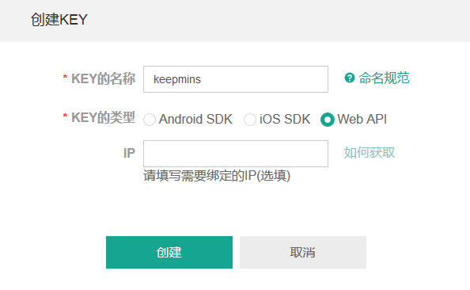

天气API Key申请流程
1 打开 https://console.qweather.com/ 这是控制台，但因为没有账号，所以会提示登录。在登录界面点击注册：

2 填写你的注册信息，注意密码要包含字母数字：

3 提示验证邮件已经发送，然后去注册邮箱点击验证链接，回到控制台：

4 用之前的信息登录，来到这样的界面，左侧点击“应用管理”，右上角点击“新建应用”：

5 应用名称随便起，不要有特殊字符和空格

6 创建后点击“添加key”：
7 key的名称也是随便填，不要有空格；key类型选择Web API，IP不用填。

8 创建以后就看到了你Key，复制这串key填入时光捕手主题选项面板，即可。